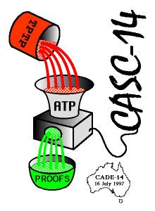

The CADE ATP System Competition

A Difficult and Arguable Venture
Conceived in a park in Nancy, after CADE-12 in 1994
Some (unsuccessful)
history
, but
we
had the
TPTP problem library
Aims and Motivations
: 50% evaluation, 50% stimuation
First CASC
at CADE-13 in 1996, now an
annual event
Organization
Clear
principles
Divisions and categories
(based on
SPCs
)
Non-biased
TPTP
problems
rated
0.21-0.99 (why?)
New problems preferred, old problems disguised
Sound, fully automatic systems
run on
StarExec
Resource limits beyond
systems' PPP
s
Ranking
by problems solved with
acceptable
proofs/models
Outcomes
Results
Cons and Pros
Not all positive
responses
Great
T-shirts